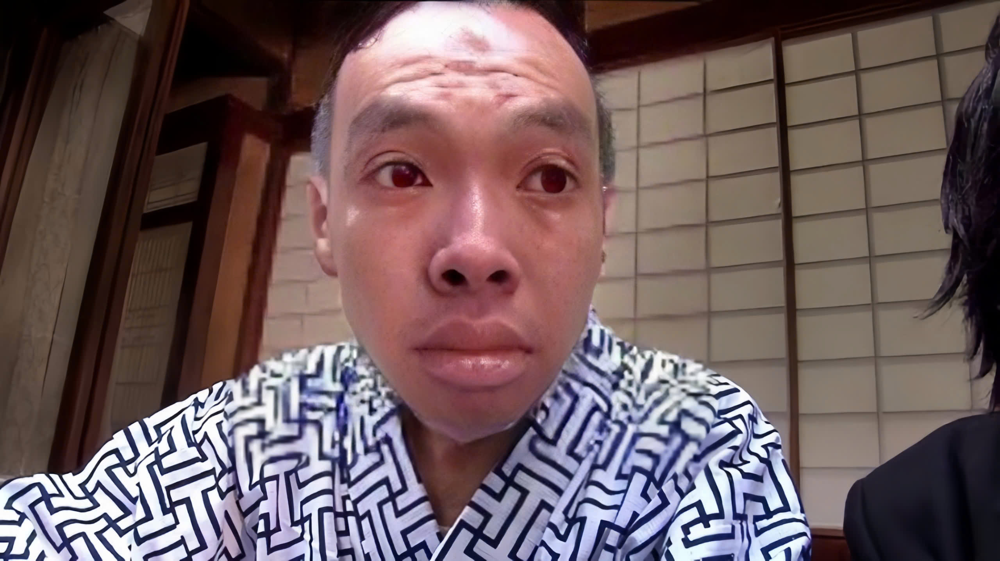

Truy nã đối tượng mua bán trái phép chất ma túy
25/03/2025 00:36
Công an thành phố Hồ Chí Minh đang truy nã đối với
Đặng Hồng Phước
(SN: 2005; Nơi thường trú: xã Lạc Xuân, huyện Đơn Dương, tỉnh Lâm Đồng) về tội Mua bán trái phép chất ma túy.


Quyết định truy nã đối tượng Đặng Hồng Phước
Trước đó, ngày 20/2/2025, Cơ quan CSĐT Công an thành phố Thủ Đức đã ra quyết định khởi tố vụ án
Mua bán trái phép chất ma túy, xảy ra ngày 18/1/2025
tại Lô E2a-7, Đường D1, Khu Công nghệ cao, P.Long Thạnh Mỹ, Tp. Thủ Đức, TP.HCM
và ra quyết định khởi tố bị can đối với Đặng Hồng Phước về tội Mua bán trái phép chất ma túy.
Cơ quan Công an đã tiến hành triệu tập đối tượng Đặng Hồng Phước để làm rõ về hành vi Mua bán trái phép chất ma túy, nhưng đối tượng không đến cơ quan Công an để làm việc, đã bỏ trốn khỏi nơi cư trú. Ngày 18/03/2025, Cơ quan Cảnh sát điều tra Công an thành phố Hồ Chí Minh đã ra quyết định truy nã đối tượng.
Nếu phát hiện đối tượng Đặng Hồng Phước ở đâu, người dân có thể báo ngay cho Cơ quan CSĐT Công an thành phố Hồ Chí Minh (Điều tra viên Lê Tuấn Kiệt, SĐT: 0xxx.xxx.xxx), cơ quan Công an gần nhất hoặc cung cấp thông tin qua trang facebook Công an TP Hồ Chí Minh để được giải quyết theo quy định pháp luật.
Cơ quan Công an đã tiến hành triệu tập đối tượng Đặng Hồng Phước để làm rõ về hành vi Mua bán trái phép chất ma túy, nhưng đối tượng không đến cơ quan Công an để làm việc, đã bỏ trốn khỏi nơi cư trú. Ngày 18/03/2025, Cơ quan Cảnh sát điều tra Công an thành phố Hồ Chí Minh đã ra quyết định truy nã đối tượng.
Nếu phát hiện đối tượng Đặng Hồng Phước ở đâu, người dân có thể báo ngay cho Cơ quan CSĐT Công an thành phố Hồ Chí Minh (Điều tra viên Lê Tuấn Kiệt, SĐT: 0xxx.xxx.xxx), cơ quan Công an gần nhất hoặc cung cấp thông tin qua trang facebook Công an TP Hồ Chí Minh để được giải quyết theo quy định pháp luật.